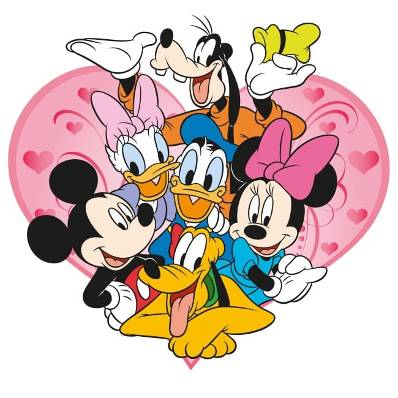

Mickey
Mickey is a mouse who loves to stay really happy and have lots of friends. He make us happy through our youth and our days enjoyable watching his shows. Moreover, it is not wrong to stay that Mickey is our childhood bestfriend.
Mickey and his friends
Mickey's Characteristics
- He has really big ears.
- He has many friends.
- He has a really cute voice.
- He loves to do adventures with us.
Mickey's friends
Mickey has many awesome friends and I think Goofy and Donald are the most in-touch friends of him.